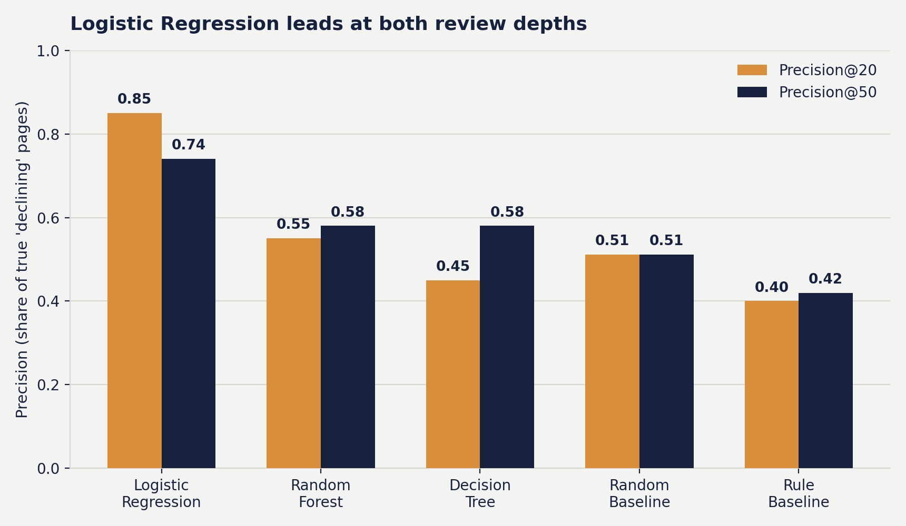
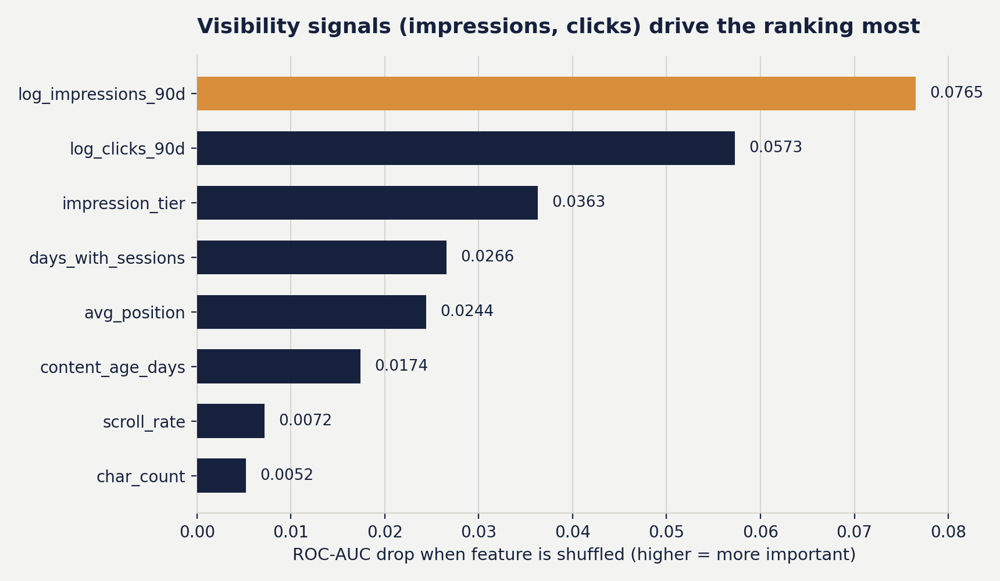

A logistic-regression ranking model scores content-refresh opportunities on 30,000 anonymized search-performance pages — and roughly halves how often a reviewer's top picks turn out to be wrong, compared to a hand-built staleness/CTR rule.
Given thousands of content pages, which ones should a content reviewer look at first for a possible refresh? Using an anonymized 30,000-page slice of FlyRank's search-performance data, three classifiers — logistic regression, a shallow decision tree, and a random forest — were trained to score pages by declining-trend probability and evaluated against a hand-built staleness/CTR rule baseline on a client-held-out test split. Logistic regression ranked test pages best, reaching 74.0% precision in its top 50 picks versus 42.0% for the rule baseline and 51.1% for random ranking — cutting wrong review picks in the top 50 roughly in half (13 of 50, vs. 29 of 50 for the rule). Reviewers can use the model's ranked queue, cross-checked against the rule engine's reason codes, to prioritize refresh work instead of reviewing pages in an arbitrary order. All results are observed and decision-support only: a single anonymized snapshot, correlational, and not a causal claim about what drives search-ranking decline.
A content reviewer with a few hours a week and thousands of live pages cannot check every page for decline. They need a short, trustworthy list: which pages to open first. Getting that list wrong costs reviewer time on healthy pages while a genuinely declining page sits unreviewed.
The FlyRank internship's Week-4 assignment (ML-07) answered this with a transparent hand-rule: flag a page if it is stale and still visible, or if it ranks well but converts poorly. That rule is easy to explain but, as shown below, misses most of the truly declining pages in its own top picks. This paper asks whether a simple learned model — trained on the same features a reviewer already has — can do meaningfully better, and whether it can still explain itself well enough for a reviewer to trust it.
The dataset is content_refresh_anonymized.csv, part of the FlyRank ML Internship starter release — an anonymized, page-level slice drawn from FlyRank's production search-intelligence warehouse (the full warehouse spans on the order of tens of millions of rows across many clients; this project used the 30,000-row anonymized cut made available for the internship).
content_id), grouped under a pseudonymous client_id.is_declining_label = 1 when the release's trend_direction field reads "down" — base rate 54.2% (16,236 of 30,000 pages).client_id is used only to group the train/test split — the data dictionary is explicit that it is a pseudonym for joins, never a model feature.content_age_days and days_since_last_update. This limitation resurfaces directly in the error analysis below.This is Lane 2 — Refresh / Content Opportunity Scoring — framed as a ranking question ("which pages should a reviewer look at first?"), not a plain yes/no classification. That means the metric that matters is precision at the top of the queue, not overall accuracy.
The Week-4 rule (ML-07) scores a page using two independently-verified signals:
A page scores stale_visible_page if it's stale and still gets ≥500 impressions in 90 days, or low_ctr_visible_page if it ranks in the top 20 with CTR below 0.5 and is visible; otherwise no_signal.
Following a "readable → stronger, add complexity only when it earns its place" approach: Logistic Regression first (a clean coefficient story), a depth-4 Decision Tree (still printable and readable), and a Random Forest (300 trees, depth 8) as the stronger candidate — worth keeping only if it actually beats the simpler models.
Features: 15 numeric signals (log-scaled impressions and clicks, days with impressions/sessions, content age, days since update, CTR, average position, engagement rate, scroll rate, word count, character count, search volume, competition, CPC) plus explicit missingness flags for the six columns prone to gaps, and 6 one-hot-encoded categorical fields (content type, main intent, age tier, freshness tier, impression tier, position tier).
An 80/20 client-grouped split (GroupShuffleSplit on client_id, seed 42): 23,837 training rows, 6,163 test rows, zero client overlap between the two — the same grouping logic used to build the Week-4 baseline queue, so the comparison below is apples-to-apples. client_id itself never enters the feature set, and a programmatic check confirmed no future-window or label-derived column was used as a feature — only signals a reviewer could observe before deciding.
All five approaches were scored on the identical held-out test split, using the same precision@K metric a reviewer actually experiences: of the top K pages sent for review, how many were truly declining?
| Approach | Precision@20 | Precision@50 |
|---|---|---|
| Logistic Regression | 0.850 | 0.740 |
| Random Forest | 0.550 | 0.580 |
| Decision Tree (depth 4) | 0.450 | 0.580 |
| Random ranking (base rate) | 0.511 | 0.511 |
| Rule baseline (Week 4) | 0.400 | 0.420 |

Of the model's top 50 ranked pages, 13 were false positives — versus 29 false positives in the rule baseline's own top 50. In other words, a reviewer working through the model's queue wastes review time on roughly 1 in 4 pages instead of roughly 3 in 5.
Permutation importance shows the ranking leans heavily on two visibility signals:

is_declining_label comes from a pre-computed trend_direction field in the anonymized release — its own construction wasn't re-derived from raw time series here.Claims in this paper are observed and decision-support — a ranked queue to prioritize human review, not a verdict on any individual page.
Observed to roughly halve wasted reviews in the top 50 (13 wrong picks vs. 29) compared with the rule-only baseline.
When a top-ranked page also carries a stale_visible_page or low_ctr_visible_page reason code from the rule engine, confidence is directional-strong — two independent signals pointing the same way.
All three concrete wrong picks shared one profile: high impressions/clicks with a weak position or CTR. A 60-second check for a recent promo, seasonal pattern, or already-completed refresh catches this failure mode.
log_impressions_90d and log_clicks_90d drive most of the ranking (permutation ROC-AUC drop of 0.077 and 0.057). A sharp move in either is worth a look even outside the formal top-K queue.
These numbers come from one snapshot and one split — treat them as a current read to monitor, not a permanent guarantee.
Every step above runs from two notebooks in the project repository, both seeded with random_state = 42:
work/notebooks/w04_baseline_score.ipynb — builds the rule baseline, reason codes, and signal checks.work/notebooks/w05_model.ipynb — trains and compares the three models against the baseline on the client-held-out split.Clone the repo, open either notebook in Google Colab (badges are pre-wired), and choose Runtime → Run all.